Claude Desktop thấy xịn ở đâu.Lead Studio học được gì.
Em so Claude Desktop với Lead Studio qua 8 khoảnh khắc giống nhau ở cả hai app: mở lần đầu, màn trống, việc chính, việc chạy lâu, lỗi, cài đặt, điều hướng và chuyển động nhỏ. Mọi hình là ảnh chụp và video thật. Bốn reader đọc chúng theo bốn góc: chuyển động, bố cục, chữ và trạng thái. Em mở lại từng ảnh trước khi đưa một ý lên trang này, và sửa chỗ reader nói quá.
Claude thấy xịn vì mỗi màn chỉ có một việc chính, mọi thao tác được đáp lại ngay chỗ mắt đang nhìn, và chữ nói bằng lời của người dùng. Lead Studio đã hơn Claude lúc chờ lâu và lúc lỗi. Lead trông như một bản Orca vì lớp vỏ còn sót lại. Đó là chữ ORCA, cột file bên phải, menu "+" toàn công cụ lập trình, và tên nội bộ lọt ra màn hình.
Cách chụp Claude Desktop 4.29 chặn CDP, nên em chụp bằng screencapture của macOS và điều khiển bằng chuột, phím thật. Cửa sổ Claude là 1710×1074 và không đổi cỡ được. Lead Studio chạy bản dev, ẩn cửa sổ, chụp qua CDP ở 1440×900, trên DB mẫu với sidecar giả và Claude giả. Video của Lead ghép từ khung CDP, nên số thời gian của Lead là số yếu. Codex chưa cài nên không có trong bài. PublishSheet chưa chụp được. Hai app khác cỡ cửa sổ, nên mật độ chỉ so theo tỉ lệ.
motionlayoutcopystates là góc nhìn của readerGreat · Creative · Smooth · Quick · Fast · Clean là chữ của anh mà ý đó chạm tớiChữ "đo" nghĩa là số đo được. Còn lại là nhìn bằng mắt.
01
Mở app lần đầu
First open. Mở app, chưa làm gì.
Claude Desktop
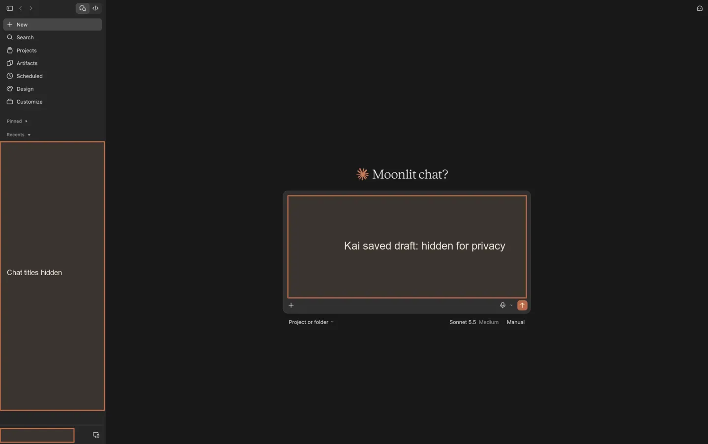
claude/01-first-open.png · bản nháp của anh đã che
Lead Studio
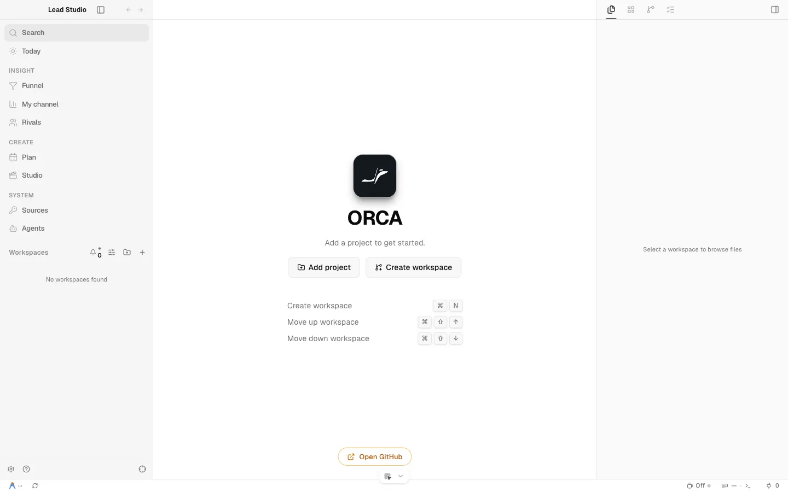
lead/01-first-open.png · chưa có dự án
Claude làm gì
Cửa sổ lên trong khoảng 1 s (capture-notes). Màn đầu chỉ có lời chào "Moonlit chat?" và ô soạn. layoutCleanQuick
Sidebar là chữ một từ: New, Search, Projects, Artifacts, Scheduled, Design, Customize. copyClean
Vì sao nó hiệu quả
Canvas giữ đúng một thứ, nên không phải chọn gì trước khi gõ. layoutCleanQuick
Lời chào là một câu hỏi có giọng người, nên mời gõ ngay. copyGreatCreative
Lead Studio làm gì thay vào đó
Thanh trên ghi "Lead Studio", còn giữa màn là logo và chữ "ORCA", "Add a project to get started.", hai nút, ba dòng phím tắt và "Open GitHub". copylayoutGreatClean
8 bảng vẫn sáng ở sidebar khi chưa có dự án. Cột phải ghi "Select a workspace to browse files". layoutstatesClean
Bấm Today thì app tự tạo workspace. Khung giữa trống, toast "Folder added" hiện ra, rồi chữ "Loading editor..." của Orca, rồi mới tới Today. Cả quá trình trong clip 3,8 s, và toast còn nguyên tới hết clip. motionQuickSmooth
Thời gian mở không so được. Lead mất 11 s tới "app: ready", nhưng đó là bản dev chạy ẩn. Không rõ bản đóng gói có còn màn ORCA khi chưa có dự án hay không.
Thêm 2 ảnh và 1 video
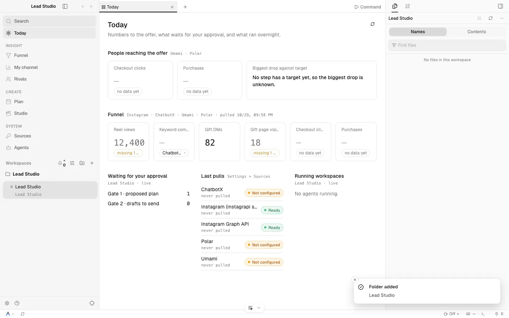
lead/01-first-open-b.png · Today và toast "Folder added"
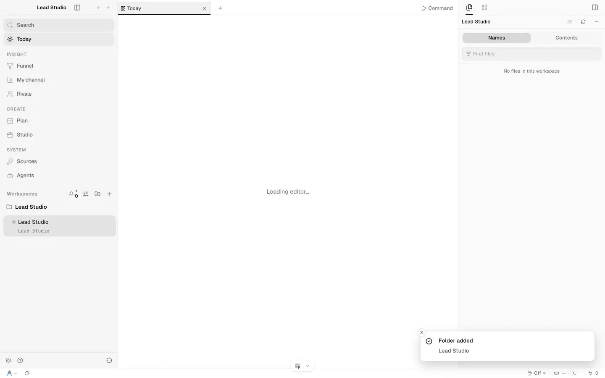
frames/lead-01-first-open-nav/f06.png · "Loading editor..."video/lead-01-first-open-nav.mp4 · 3,8 s, bấm Today khi chưa có dự án
02
Màn trống
Empty state. Chưa có dữ liệu, màn hình nói gì và mời làm gì.
Claude Desktop
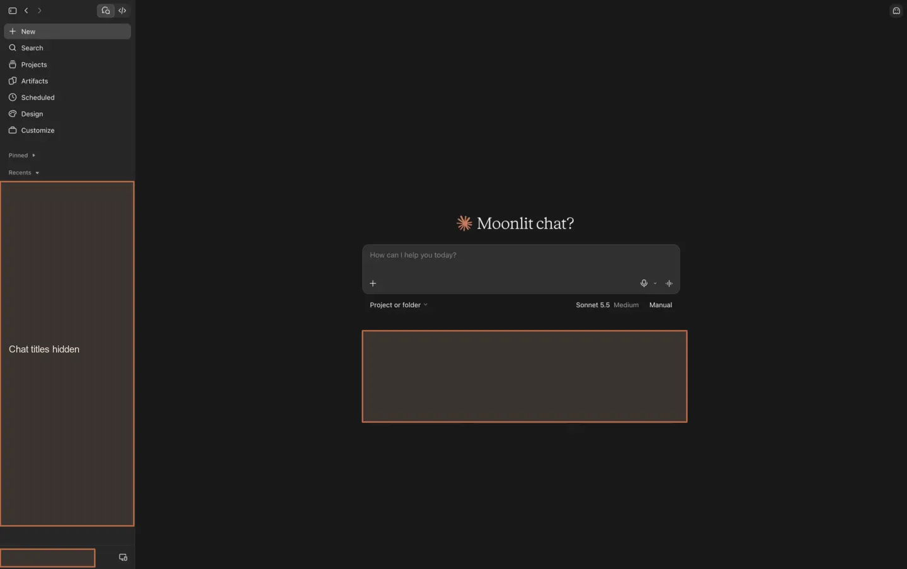
claude/02-empty-state.png · chat mới, ô soạn trống
Lead Studio
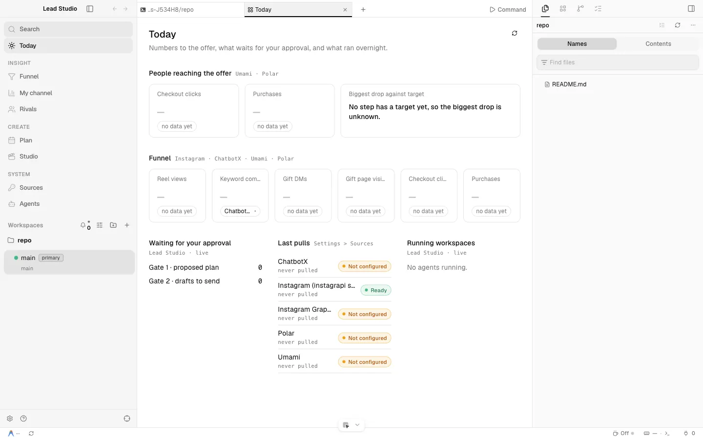
lead/02-empty-state.png · Today trên DB trống
Claude làm gì
Màn trống chính là màn thường: ô soạn "How can I help you today?" và một hàng 3 "Recent artifacts" có ảnh, có giờ ("22m ago"). layoutCleanQuick
Trang trống trong Settings có hình vẽ nhỏ, một câu, một hai nút. "No servers added" đi cùng "Edit config" và "Developer docs". statescopyQuick
Scheduled trống ghi "No scheduled tasks yet.", có nút "Set up manually" và 6 mẫu dựng sẵn như "Content ideas", "Monitor a topic". statesCreativeQuick
Vì sao nó hiệu quả
Trang trống nói thiếu gì, rồi đặt bước tiếp theo ngay cạnh. statesQuick
Mẫu dựng sẵn cho thấy tính năng dùng để làm gì, nên người mới không phải đoán. copyCreative
Lead Studio làm gì thay vào đó
Today trên DB trống vẫn là bảng đầy đủ: 8 ô số chỉ có dấu gạch, 7 nhãn "no data yet", 5 nguồn "never pulled", và không có nút nào. layoutstatesCleanQuick
"Checkout clicks" và "Purchases" hiện hai lần trên cùng trang, một lần ở hàng offer và một lần ở hàng Funnel. layoutClean
Funnel và Rivals bảo người dùng nhờ agent bằng tên lệnh "crowsnest_save_funnel", "crowsnest_save_analysis". My channel ghi "Connect Instagram in Sources" nhưng chữ Sources không bấm được, và trang không có tiêu đề. copystatesCleanQuick
Điểm sáng. Rivals trống tự giải thích từng mục và có sẵn ô "@handle or channel link" với nút "Add rival". Studio có câu trống hay nhất app: "Nothing is cooking. Cook a reel from Plan." statescopyGreat
Các reader đếm lệch nhau ("no data yet" x5, x6, "13+"). Em đếm lại trên ảnh: 8 ô dấu gạch, 7 nhãn "no data yet", tổng cộng 13 chip và pill.
Thêm 6 ảnh
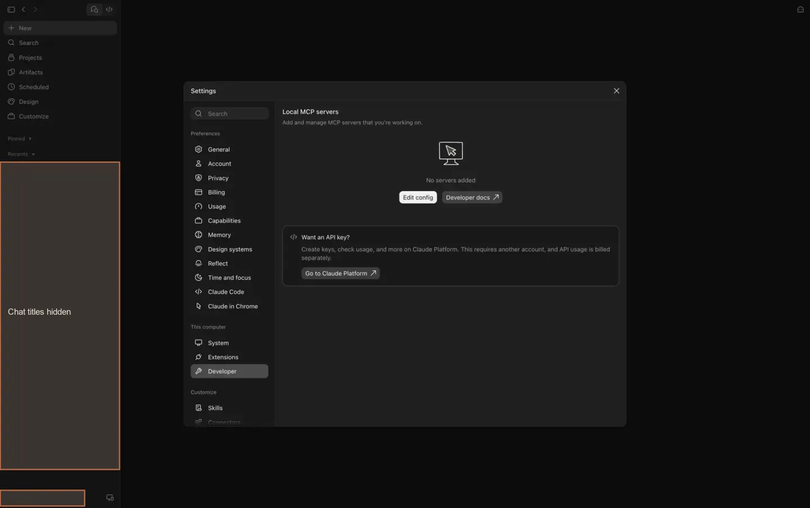
claude/02-empty-state-c.png · "No servers added" và 2 nút
lead/02-empty-state-funnel.png · một câu, không nútlead/02-empty-state-own.png · không tiêu đề, Sources không bấm được
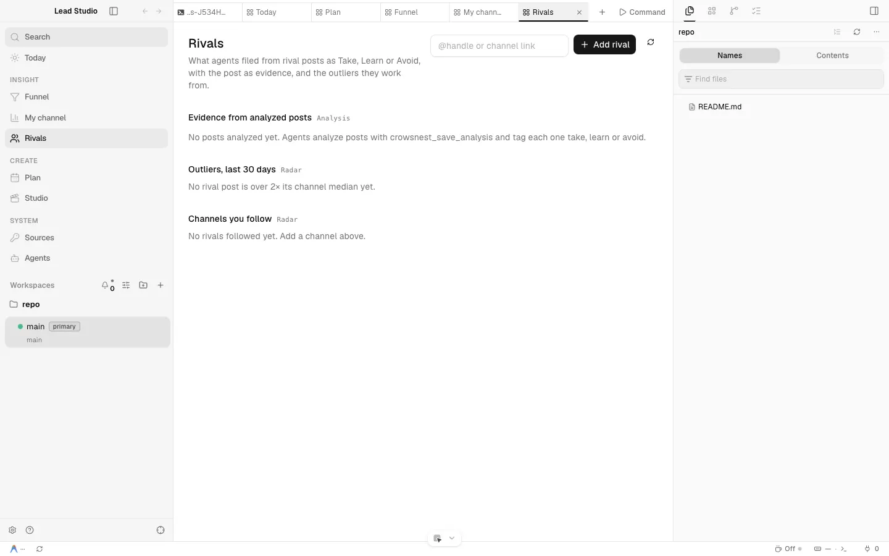
lead/02-empty-state-rivals.png · trang trống tốt nhất của Lead
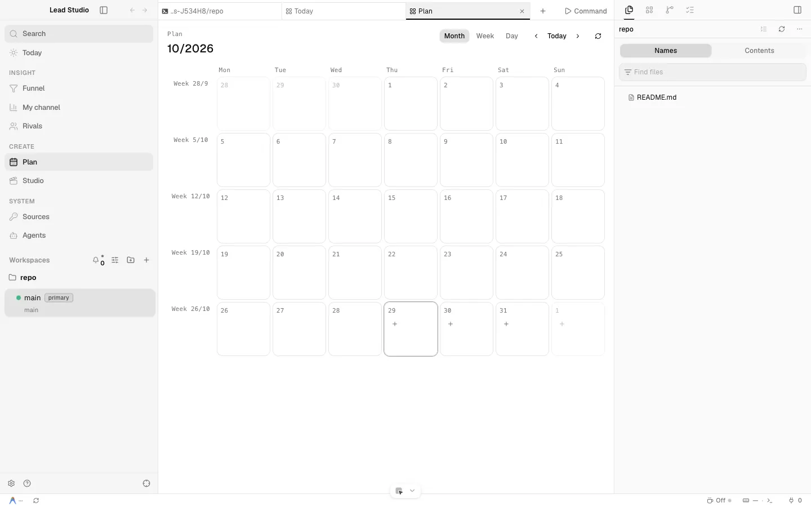
lead/02-empty-state-plan.png · chỉ có lịch và dấu +
03
Việc chính
Main job. Bấm nút chính, app xác nhận ra sao.
Claude Desktop
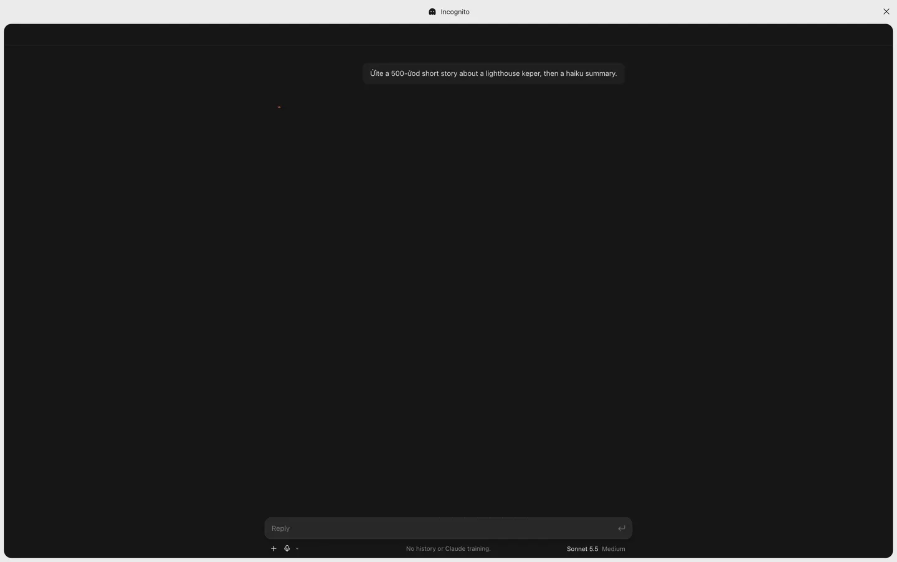
frames/claude-08-type-send-stream/f02.png · ngay sau Enter
Lead Studio
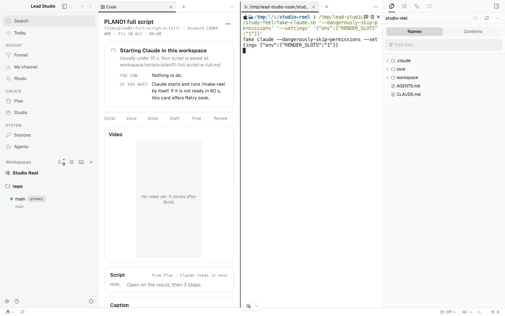
lead/03-main-job-d-cook.png · ngay sau Cook
Claude làm gì
Bấm Enter thì câu hỏi thành bong bóng bên phải, ô soạn trống ngay, và một chấm nhỏ báo đang chờ. Chữ đầu tiên tới sau khoảng 1 tới 3 s (capture-notes). Khi chữ chạy, nút gửi thành ô vuông Stop. motionQuickFast
Dưới câu trả lời chỉ có 5 icon nhỏ. Menu model có 3 dòng: "Opus 5.5" với "For complex work and everyday tasks", rồi "Effort", rồi "More models". layoutcopyClean
Vì sao nó hiệu quả
App xác nhận ngay chỗ mắt đang nhìn, trước khi model trả lời, nên thời gian chờ bị giấu đi. motionQuickFast
Nút nhỏ và nằm ngay dưới thứ nó tác động. Lựa chọn khó duy nhất được tả bằng lời người. layoutcopyClean
Lead Studio làm gì thay vào đó
Điểm sáng. Bấm Cook thì card hiện ngay: "Starting Claude in this workspace", "Usually under 10 s.", cùng hai hàng YOU CAN "Nothing to do." và IF YOU WAIT. Cùng ý với Claude, và nói thật hơn. statescopyQuickGreat
Chung quanh card là phần thô: terminal in lệnh "--dangerously-skip-permissions" (ở đây là Claude giả của bản test), cây file, chữ "/make-reel", và dòng mono "keyword COOKP / ANE" ngắt giữa chữ. layoutcopyClean
Ở Plan Day, 7 hàng "not yet" và 7 chip "Missing" lặp đúng 7 tên đó. "Key", "Gift", "Offer" không có lời giải thích. layoutcopyCleanFast
Today hiện ra 913 ms sau cú bấm sidebar (đo, lane có dữ liệu). Ở lane trống, các bảng hiện trong 0,1 tới 0,5 s (đo). motionQuick
Thêm 4 ảnh
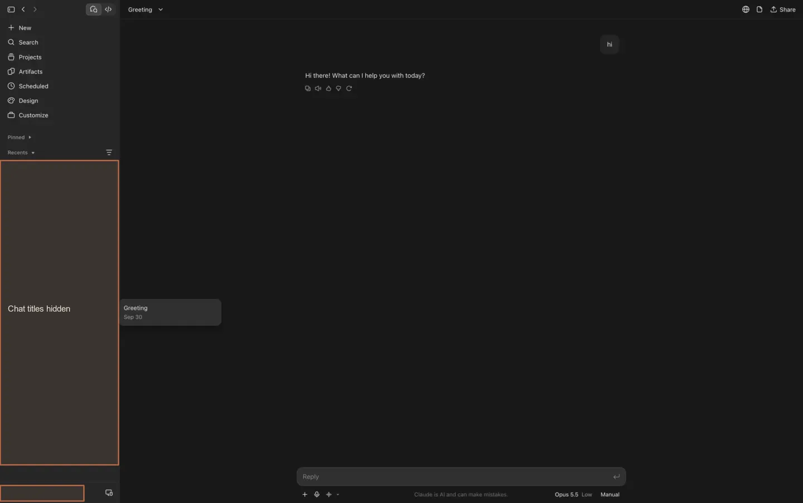
claude/03-main-job.png · câu trả lời và 5 icon
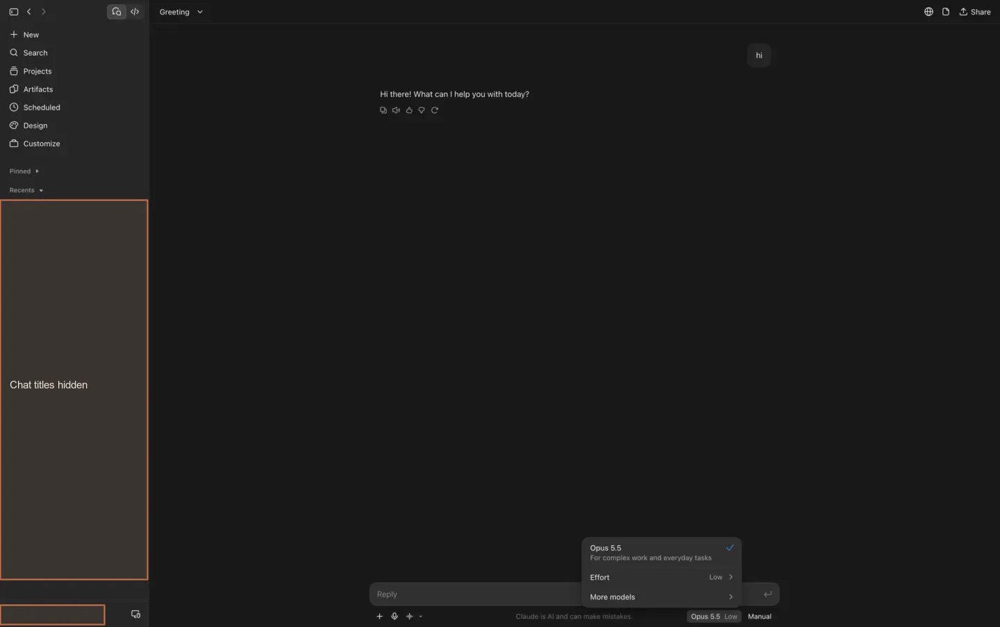
claude/08-model-menu.png · menu model 3 dòng
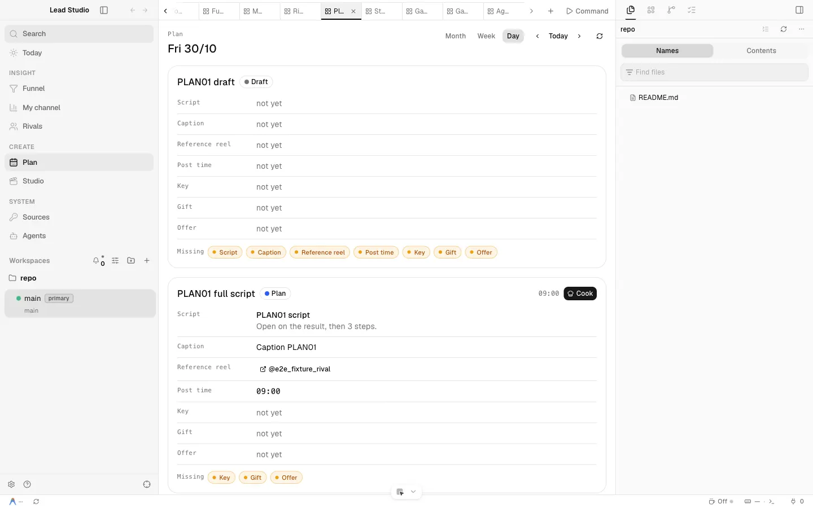
lead/03-main-job-c.png · 7 hàng và 7 chip trùng tên
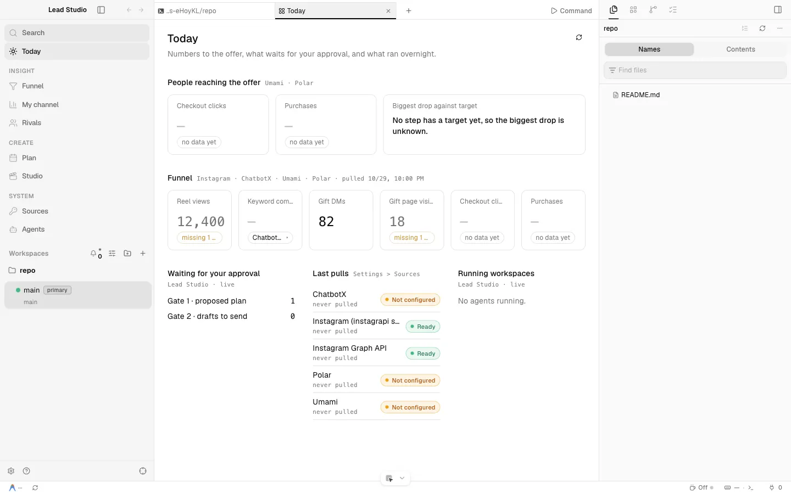
lead/03-main-job.png · Today, nhãn nguồn mono trên mọi khối
04
Việc chạy lâu
Long running. Việc mất vài giây tới vài phút.
Claude Desktop
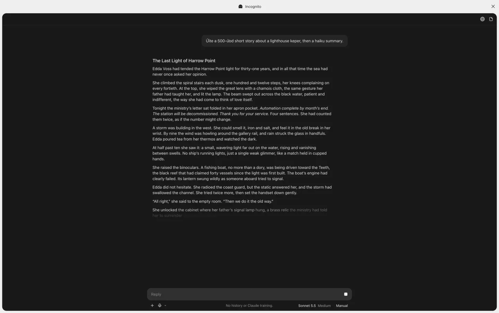
claude/04-long-running.png · đang chảy chữ, dòng cuối mờ
Lead Studio
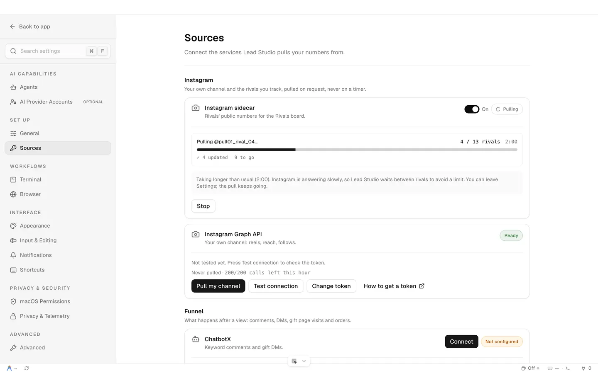
lead/04-long-running-b.png · kéo rival quá 2 phút
Claude làm gì
Câu trả lời chảy xuống từng đoạn. Mấy chữ mới nhất hiện mờ rồi đậm dần. Trang chỉ dài thêm xuống dưới, không giật. Lượt chảy kéo dài khoảng 20 s (capture-notes). motionSmooth
Không đồng hồ, không phần trăm. Lúc còn nghĩ chỉ có một dòng nhỏ "Drafting the lighthouse essay in full". Search đang tải thì có spinner và các hàng xám giữ chỗ. layoutcopyCleanSmooth
Vì sao nó hiệu quả
Kết quả chính là thanh tiến độ, nên không có gì phải đọc hai lần. layoutClean
Mép chữ mờ giữ mắt ở cuối dòng, nên việc chờ trông như đang chảy. motionSmoothQuick
Lead Studio làm gì thay vào đó
Ở đây Lead nói thật hơn Claude. Thẻ cho biết đang kéo ai, "4 / 13 rivals", đồng hồ, "4 updated", "9 to go" và nút Stop. Quá 2 phút thì hiện: "Taking longer than usual (2:00). Instagram is answering slowly, so Lead Studio waits between rivals to avoid a limit. You can leave Settings; the pull keeps going." statescopyGreatQuick
Giữ. Bấm Stop thì có "You stopped the pull at 3/13." và nút "Pull the rest (10)". Cook render ghi "Step 5 of 6 · 7:42 so far, usually about 3:00", không phần trăm. statesGreat
Cái giá: một lần kéo hiện 5 thông tin tiến độ cùng lúc, bên cạnh 2 thẻ nguồn khác với 4 nút. layoutClean
Thanh tiến độ đứng ở "0 / 13" ít nhất 21 s, chỉ đồng hồ nhảy (0:01 tới 0:22, đọc trên khung f03 tới f06; sidecar giả). motionSmooth
Ô Video ghi "No video yet. It comes after Build." trong khi dải bước đã tick Build và Draft. Đây là bản Claude giả, nên với file thật có thể khác. statesClean
Hai reader nói khác nhau về phần trăm. Layout nói Cook không bao giờ dùng phần trăm; motion nói bản nháp có. Ảnh cho thấy motion đúng: bước Draft ghi "60%", chỉ bước Final là không.
Thêm 7 ảnh và 1 video
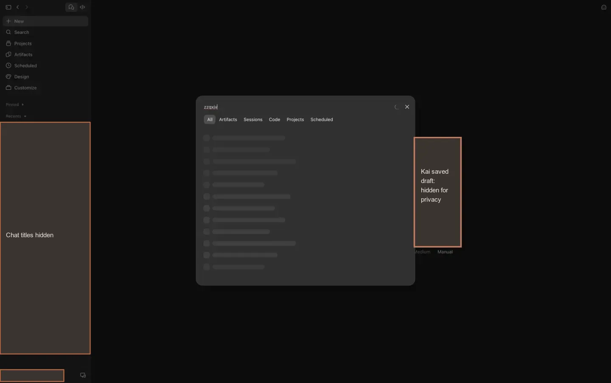
claude/04-long-running-b.png · hàng xám giữ chỗ; phần nháp lộ ra đã che
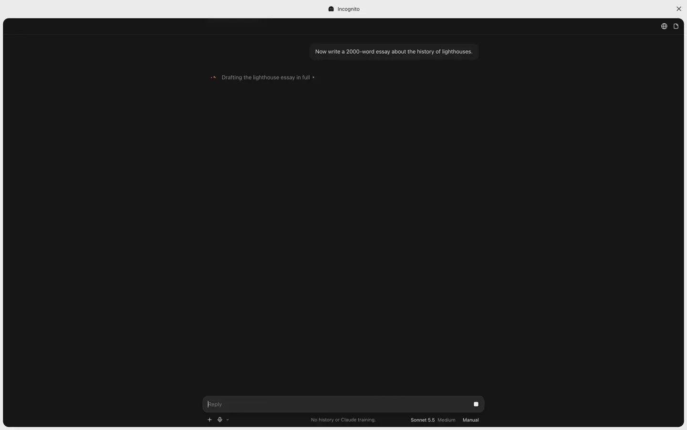
frames/claude-08-stop-generation/f05.png · một dòng trạng thái nhỏ
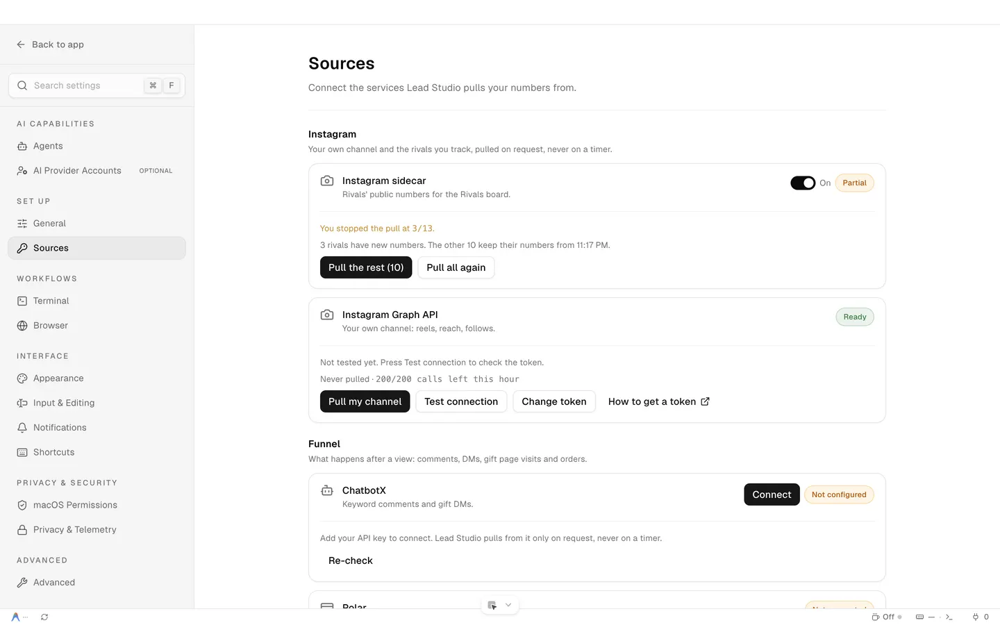
lead/04-long-running-c-stopped.png · dừng giữa chừng, giữ 3 kết quả
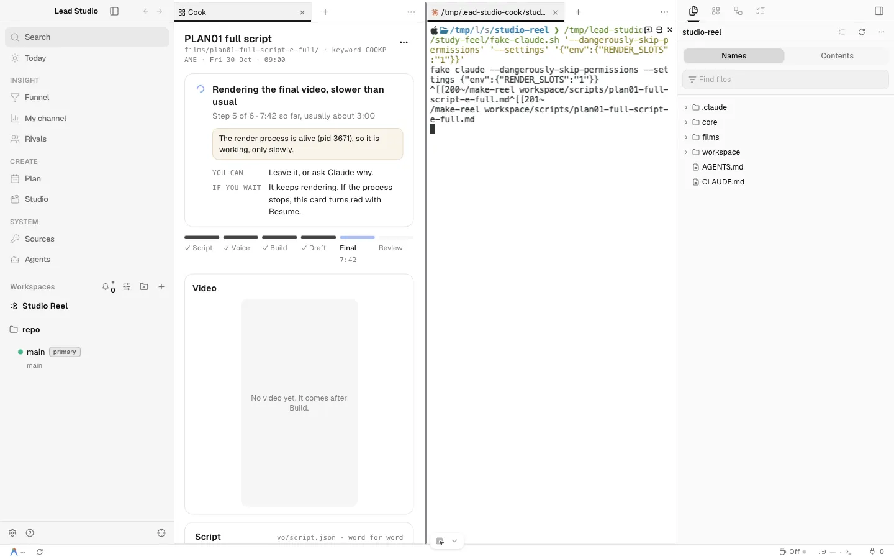
lead/cook/cook-pane-10-long-render.png · so với giờ thường lệ, không %
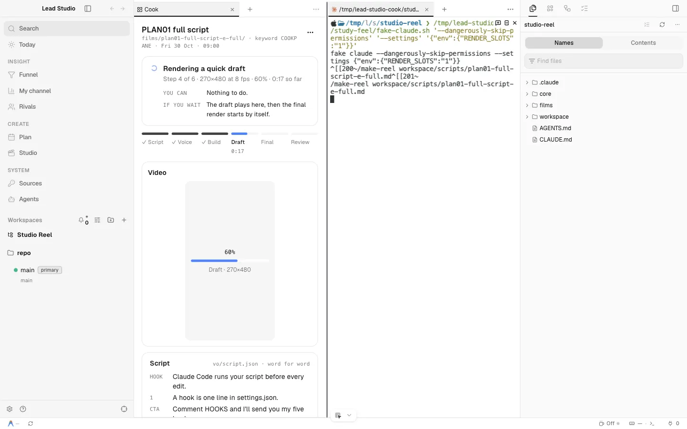
lead/cook/cook-pane-07-draft.png · bản nháp có "60%"frames/lead-04-sidecar-pull/f03.png · "0 / 13" ở 0:01
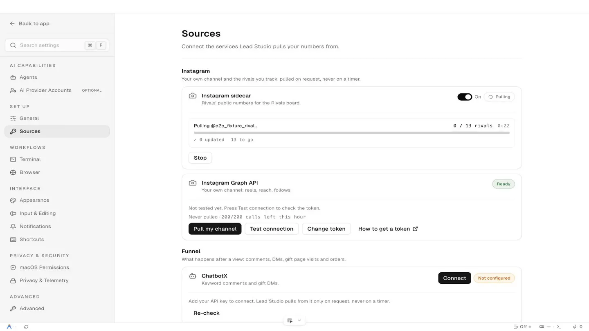
frames/lead-04-sidecar-pull/f06.png · vẫn "0 / 13" ở 0:22video/lead-04-sidecar-pull.mp4 · 72 s đầu của journey kéo rival
05
Lỗi
Error. Có gì đó hỏng hoặc bị dừng.
Claude Desktop
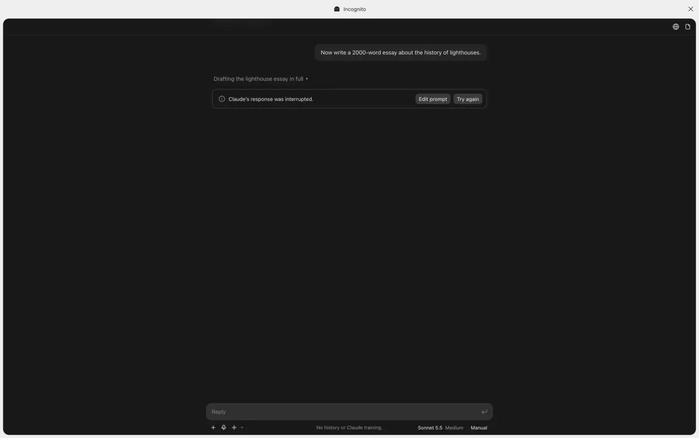
claude/05-error.png · sau khi bấm Stop
Lead Studio
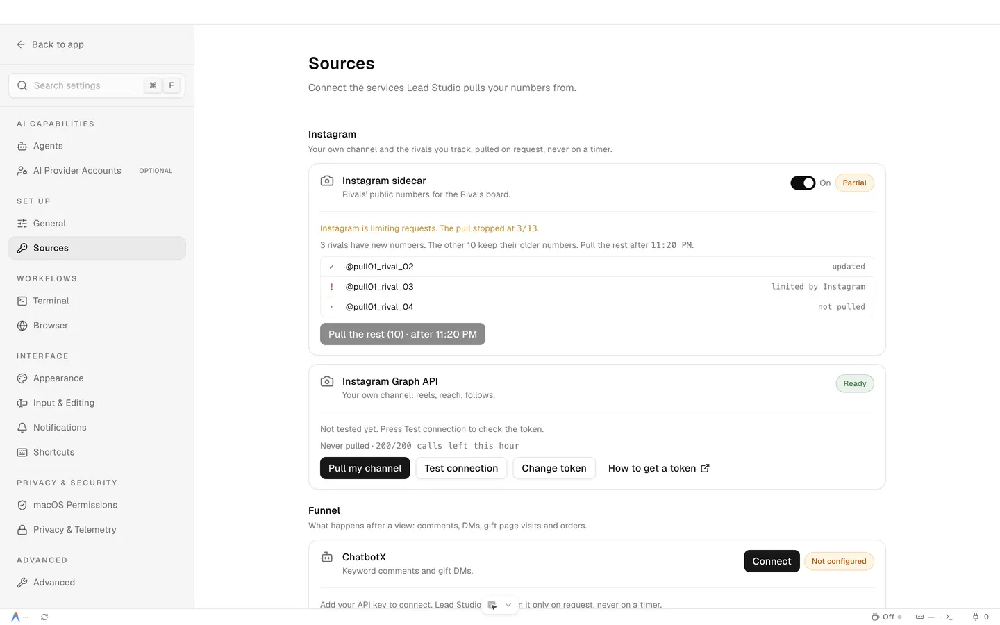
lead/05-error-b.png · Instagram giới hạn, kéo được 3/13
Claude làm gì
Một khung viền mảnh hiện đúng chỗ chữ đáng lẽ chạy: "Claude's response was interrupted." với "Edit prompt" và "Try again". Câu hỏi cũ vẫn ở trên. layoutcopyCleanQuick
Không modal, không màu đỏ. statesSmooth
Vì sao nó hiệu quả
Lời báo và hai cách sửa nằm trên một hàng, ngay chỗ hỏng. Hai động từ, không đổ lỗi, không mã lỗi. copylayoutCleanQuick
Lead Studio làm gì thay vào đó
Lỗi của Lead hữu ích hơn. Nó nói phần nào đã giữ và bấm gì tiếp: "3 rivals have new numbers. The other 10 keep their older numbers." Ở Cook: "6 of 10 steps are done and kept" với nút "Resume cook". statescopyGreat
Giữ. Lỗi hay nhất có một nút làm hai việc: "Turn on and pull the rest (11)". statesQuick
Tên nội bộ lọt ra: "session id", "sidecar", "pid 4000007", "frame 0", "Final (render)". copyClean
Một ý nói 2 tới 3 lần: pill "Partial", câu, rồi từng hàng. Giờ "11:20 PM" nằm cả trong câu lẫn trên nút xám. Card Cook đỏ đặc. Card đỏ đếm "6 of 10 steps", còn đầu pane đếm "Step 5 of 6". layoutcopyCleanSmooth
Claude không nói lý do vì chính người dùng bấm Stop. Lỗi mạng thật của Claude không chụp được: deep link sai không làm gì cả, nên khung "interrupted" đứng thay.
Thêm 4 ảnh và 1 video
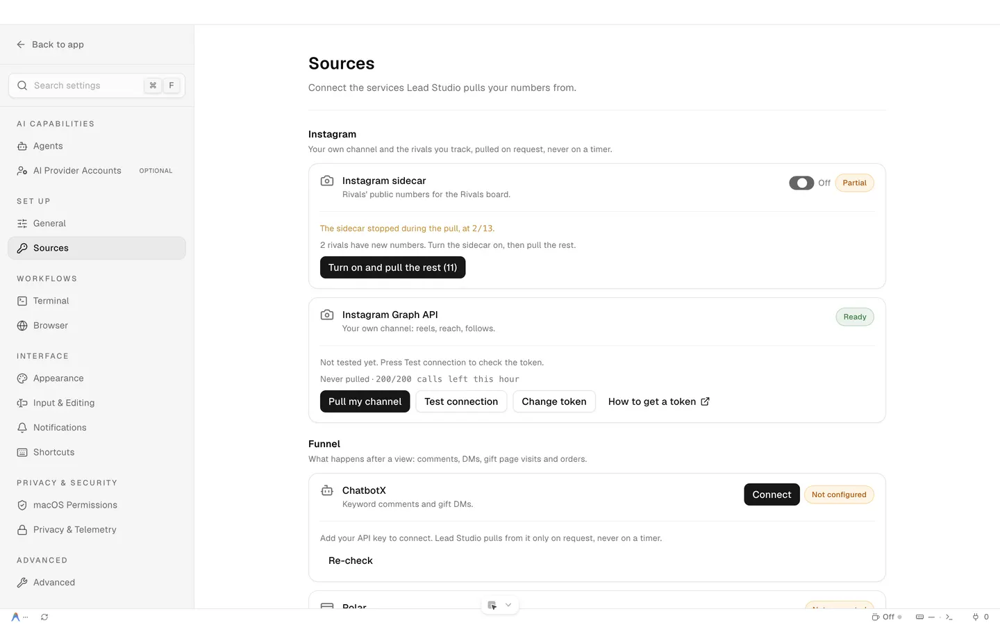
lead/05-error-c.png · một nút làm hai việc
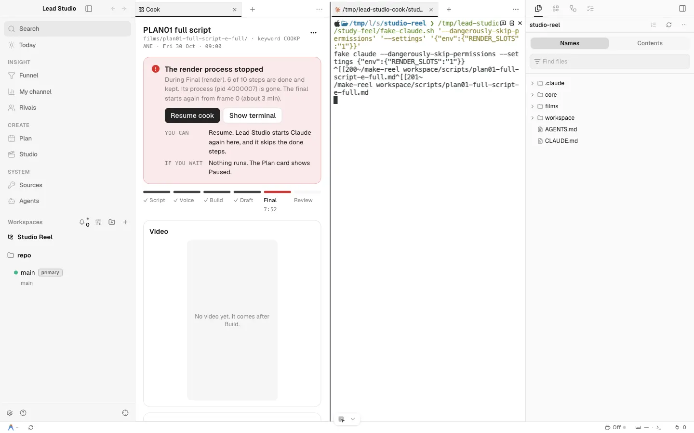
lead/cook/cook-pane-pid-gone.png · giữ 6 bước, nhưng lộ "pid", "frame 0"
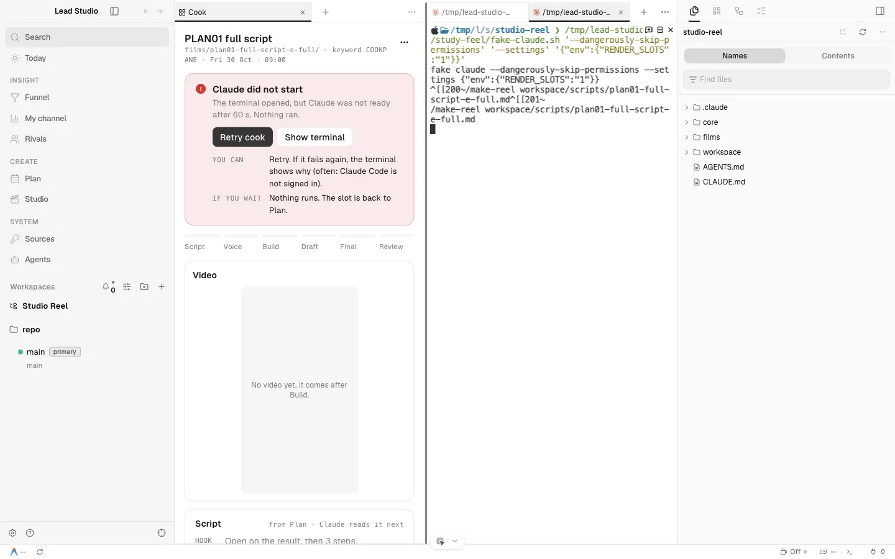
lead/cook/cook-pane-03-start-failed.png · "Nothing ran", có Retry cook
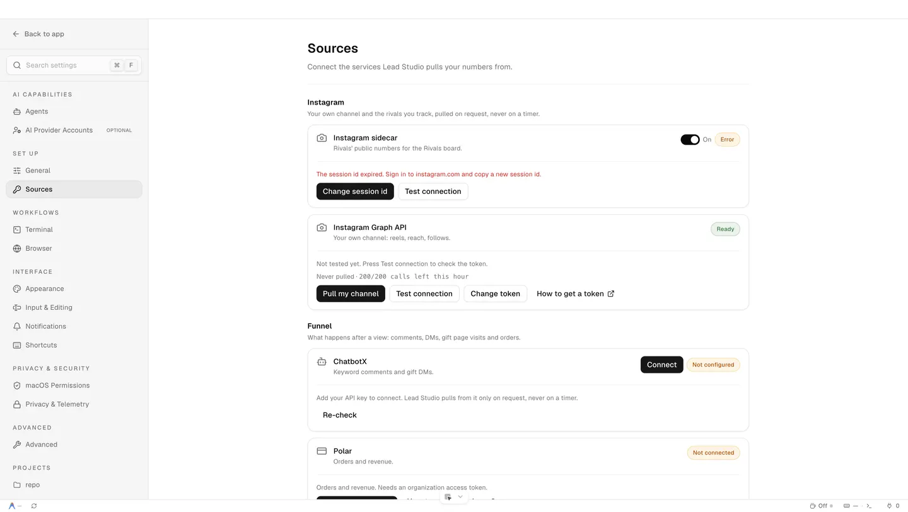
lead/05-error.png · "session id" hết hạnvideo/lead-04-cook-pane-states.mp4 · mọi trạng thái của Cook pane, 47 s
06
Cài đặt
Settings. Mở cài đặt, đổi trang, đóng lại.
Claude Desktop
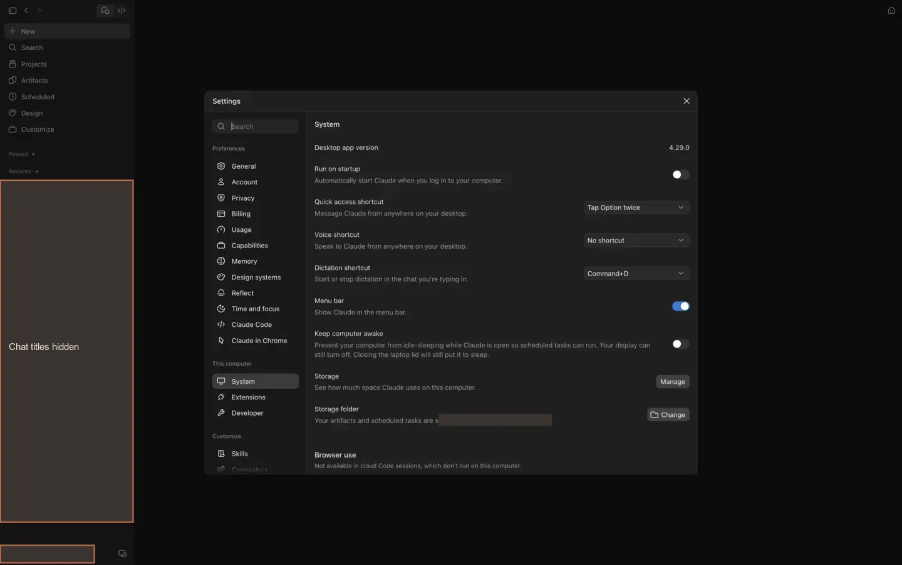
claude/06-settings.png · Cmd+, mở trang System
Lead Studio
lead/06-settings.png · Settings, trang Sources
Claude làm gì
Cmd+, mở Settings thành khung nổi trên app đang mờ, app phía sau vẫn thấy. Khung hiện trong dưới 0,1 s (đo thô: thay đổi gói trong 2 khung hình liền nhau ở 1,52 s). motionlayoutQuick
Mỗi dòng có tên đậm, một câu xám nói nó làm gì cho bạn ("Message Claude from anywhere on your desktop."), và nút ở bên phải. layoutcopyClean
Connectors "Yours" là bảng 3 cột. Trạng thái là dấu tick. Chỉ dòng cần làm mới có nút "Connect". Tìm không ra thì hiện "No matching settings". layoutstatesCleanFast
Vì sao nó hiệu quả
Mọi cài đặt cùng một hình dạng dòng, nên mắt học một lần. layoutClean
Trạng thái là ký hiệu, chỉ ngoại lệ mới có nút. Mở nhanh mà vẫn giữ ngữ cảnh. layoutmotionFastQuick
Lead Studio làm gì thay vào đó
Bấm Sources thì cả app bị thay bằng trang Settings toàn màn. Hai khung trắng trơn, rồi một khung mờ có spinner, rồi mới có nội dung, tổng khoảng 1,2 s (đo yếu, video ghép từ khung CDP). motionQuickSmooth
Mỗi nguồn là một thẻ: tên, câu mục đích, pill, câu trạng thái và 3 tới 4 nút. Câu mục đích viết tốt: "Rivals' public numbers for the Rivals board." layoutcopyClean
Pill "Ready" đi cùng câu "Not tested yet. Press Test connection to check the token.", nên hai tín hiệu cãi nhau. Thân thẻ dùng chữ API: "token", "session id", "200/200 calls left this hour". statescopyClean
Sidebar Settings vẫn là nhóm của Orca: Terminal, Browser, Input & Editing, macOS Permissions, AI Provider Accounts. copylayoutGreatClean
Thêm 4 ảnh và 1 video
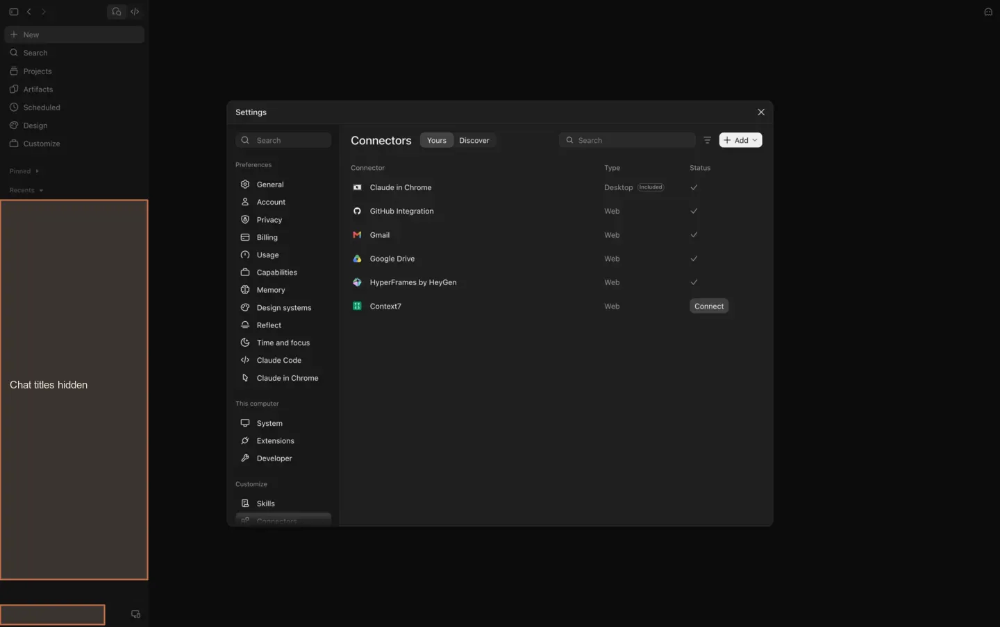
claude/06-settings-connectors-yours.png · dấu tick, nút chỉ cho ngoại lệ
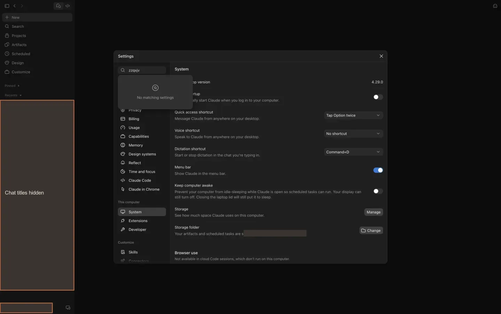
claude/02-empty-state-b.png · "No matching settings"
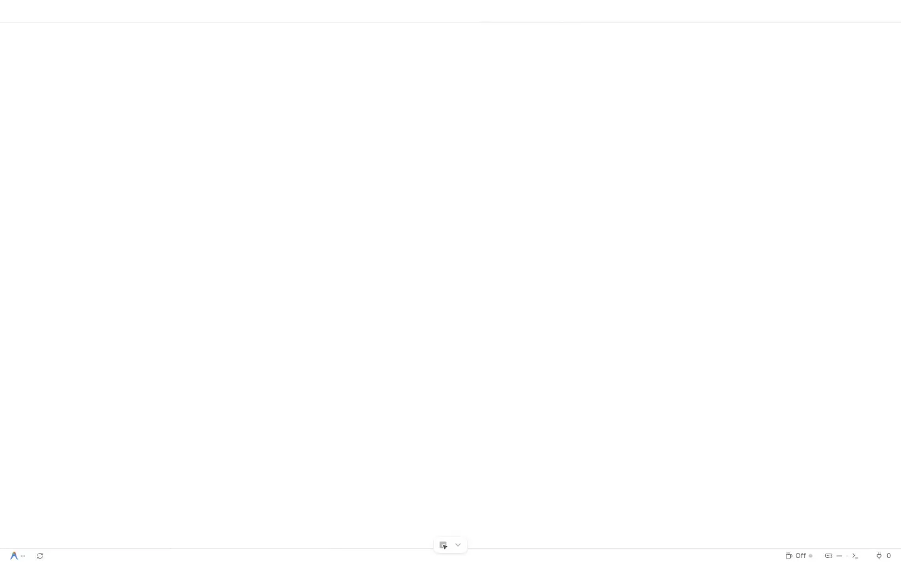
frames/lead-06-settings-open/f03.png · khung trắng (f02 cũng vậy)
frames/claude-07-navigation/f02, f04, f05, f06 · Projects, Artifacts, Scheduled khung xám, Scheduled nội dung. Video gốc có bản nháp của anh ở đầu và cuối nên em không nhúng; đây là 4 khung sạch ở giữa clip.
Bấm một mục sidebar thì canvas đổi. Sidebar đứng yên, mục đang chọn sáng lên. 7 mục cố định, không có tab. layoutCleanQuick
Scheduled hiện các hàng xám giữ chỗ khoảng 0,4 s rồi nội dung lấp đúng chỗ đó (đo: 7,72 s tới 8,10 s). Artifacts hiện thẻ xám trước, tên tới sau khoảng 1,4 s, ảnh xem trước tới muộn hơn nữa, và thẻ không đổi chỗ. motionSmooth
Vì sao nó hiệu quả
Mỗi lần chỉ một thứ đổi. Khung xám giữ hình trang, nên nội dung lấp vào chỗ có sẵn. motionlayoutSmoothClean
Claude cũng có chỗ chưa mượt: ở 5,5 s banner của Artifacts thêm một dòng và đẩy hàng thẻ xuống một chút. motionSmooth
Lead Studio làm gì thay vào đó
Mỗi cú bấm sidebar mở hoặc chọn một tab. Sau 9 bảng, dải tab toàn tên cụt: "Fu...", "M...", "Ri...", "Ga...", "Ga...". layoutQuickClean
Nút "+" kể lại 9 bảng, thêm New Terminal, New Browser Tab, New Markdown, New Mobile Emulator, mẹo iOS simulator có "Keep / Hide", và 9 app agent từ Claude tới Hermes. layoutcopyCleanGreat
Gate 1 và Gate 2 có tab và có trong "+", nhưng không có trong sidebar. Một bảng tới được bằng 3 đường: sidebar, "+" và dải tab. layoutQuick
Cột file bên phải ("README.md") đứng y nguyên ở mọi bảng. layoutClean
Thêm 3 ảnh
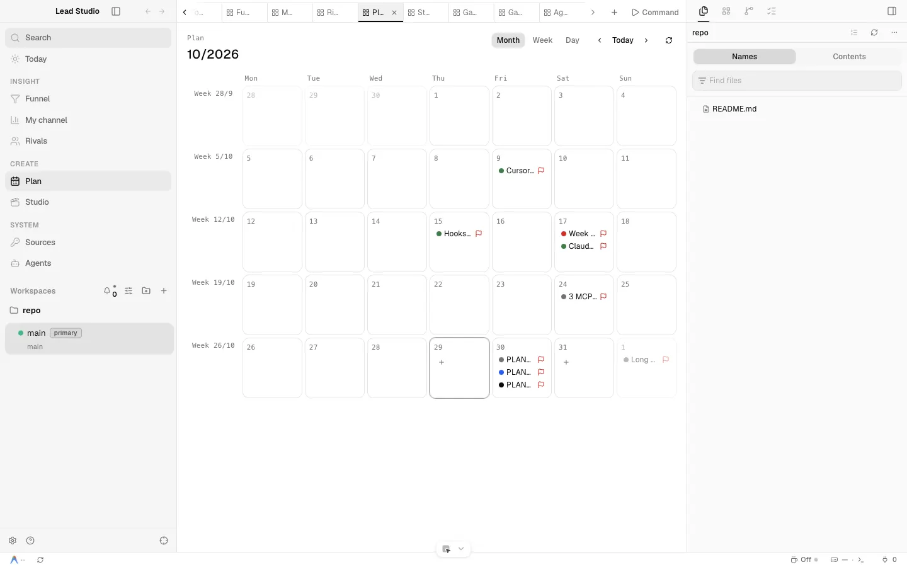
lead/07-navigation-a.png · dải tab toàn tên cụt
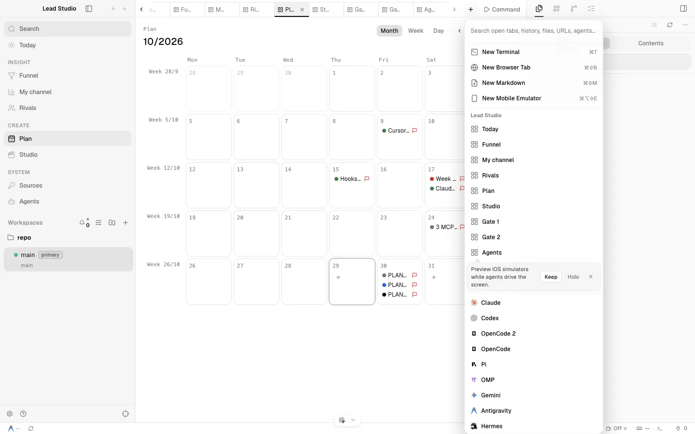
lead/07-navigation-b.png · menu "+"
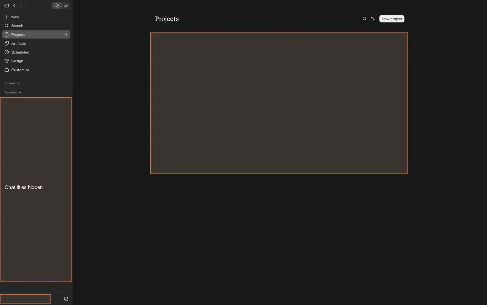
claude/07-navigation-a.png · 14 dự án, mỗi dòng tên và ngày
08
Chuyển động nhỏ
Animations. Rê chuột, mở menu, đổi màn. Ba cặp video, cùng một việc ở hai app.
Rê chuột và menu
Claude Desktop
video/claude-08-hover-actions-model-menu.mov · rê lên tin nhắn và từng icon
Lead Studio
video/lead-08-new-tab-menu-open-board.mp4 · mở menu "+", chọn Studio
frames/lead-08-cook-pane-open/f02.png · menu "+" đang mờ dần
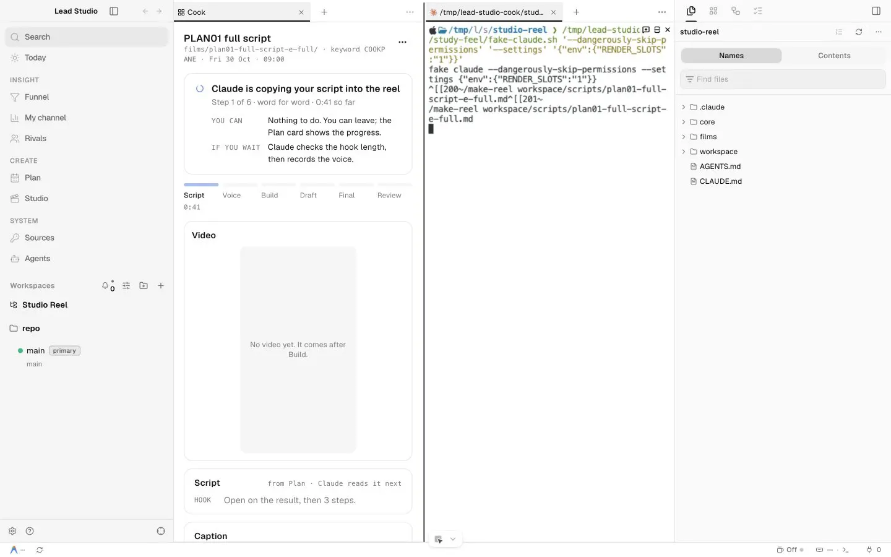
frames/lead-08-cook-pane-open/f04.png · tiêu đề đổi theo việc
Claude làm gì
Rê lên tin nhắn thì ngày "Sep 30" hiện ra, và mỗi icon có nhãn riêng: "Read aloud", "Good response", "Bad response", "Retry". motioncopyGreatClean
Rê lên một dòng sidebar thì có nền xám nhẹ, nút "...", và thẻ tên "Greeting / Sep 30" (claude/03-main-job.png). motionGreat
Thoát incognito về chat mới: khung app đứng yên, chỉ ảnh xem trước trong "Recent artifacts" tô vào sau. Bấm Stop: ô vuông, rồi khung "interrupted". motionSmooth
Vì sao nó hiệu quả
Mỗi lần rê chuột có một phản hồi nhỏ, đúng chỗ, và có tên hành động. motionGreatClean
Chuyển động nhỏ và nằm sát thứ người dùng đang nhìn, nên app thấy nhanh mà không ồn. motionSmooth
Lead Studio làm gì thay vào đó
Chuyển động phần lớn là của Orca: menu "+" mờ dần khi mở hoặc đóng, toast "Folder added" ở lại hết clip, gạch chân chạy theo tab. motionSmooth
Plan đổi Week sang Day phắt một cái, không có bước chuyển. motionSmooth
Chất riêng của Lead. Cook pane có dải 6 bước tô dần, tiêu đề đổi theo việc ("Claude is copying your script into the reel", "Claude is building the chapters"), và đồng hồ chạy. motioncopyCreativeSmooth
Chưa thấy nhãn khi rê chuột trong Lead. Screencast không vẽ con trỏ, nên chưa chắc là không có. motionClean
Ba video Claude khác (sidebar thu gọn, mở Search, mở và đóng Settings) có bản nháp của anh trong khung hình, nên em không nhúng. Video type-send-stream cũng vậy ở khung đầu; trang chỉ dùng các khung sạch của nó.
Mỗi bảng của Lead Studio: Keep, Cut hay Merge
Mỗi hàng là một bảng: ảnh thật, bảng đó cho thấy gì, nó trùng với bảng nào, và bằng chứng cho cả ba hướng. Em không chọn. Anh bấm Keep, Cut hoặc Merge, và chọn bảng đích khi Merge. Lựa chọn được nhớ trong trình duyệt này. Bấm "Copy my picks" để lấy danh sách dạng chữ.
0 / 11 bảng đã chọn
lead/boards/today.png
Today
Thấy gìOffer, dải Funnel 6 bước, việc chờ duyệt (Gate 1, Gate 2), Last pulls và workspace đang chạy.
TrùngDải Funnel giống bảng Funnel (12,400 · 82 · 18). "Checkout clicks" và "Purchases" hiện hai lần trên trang. Số Gate trùng Gate 1, Gate 2. Last pulls trùng Sources.
KeepChỗ duy nhất gom việc chờ anh duyệt. Câu mở đầu rõ: "Numbers to the offer, what waits for your approval, and what ran overnight."
CutDải Funnel lặp bảng Funnel. 5 hàng "never pulled" lặp Sources. Lúc trống có 8 ô dấu gạch mà không có nút nào.
MergeÍt lý do gộp Today vào bảng khác. Chiều ngược lại có bằng chứng: Gate 1, Gate 2 có thể vào khối duyệt của Today.
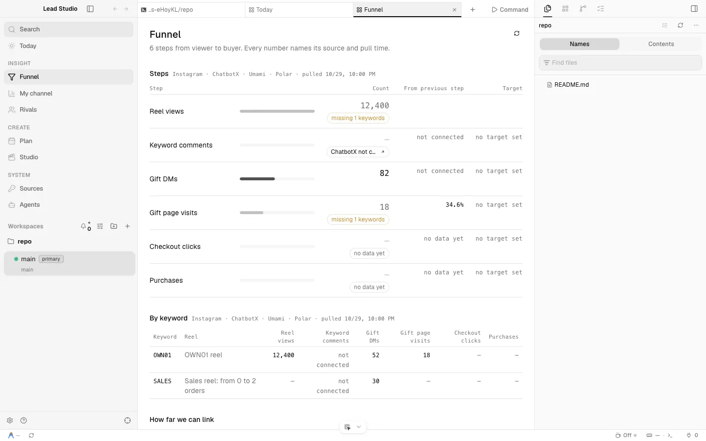
lead/boards/funnel.png
Funnel
Thấy gì6 bước có thanh, số, tỉ lệ so với bước trước và mục tiêu. Bảng By keyword. Mục "How far we can link".
TrùngCùng 6 số với dải Funnel trên Today. Hàng OWN01 (52 DM, 18 lượt) chính là "After the reel" ở My channel.
KeepPhụ đề là một lời hứa: "6 steps from viewer to buyer. Every number names its source and pull time." Bảng duy nhất tách theo keyword.
CutCột Target ghi "no target set" ở cả 6 hàng. Lỗi số nhiều "missing 1 keywords". Lúc trống nhắc tên lệnh "crowsnest_save_funnel".
MergeVào My channel. Hai bảng cùng kể chuyện sau một reel, và "After the reel" đã link sang Funnel.
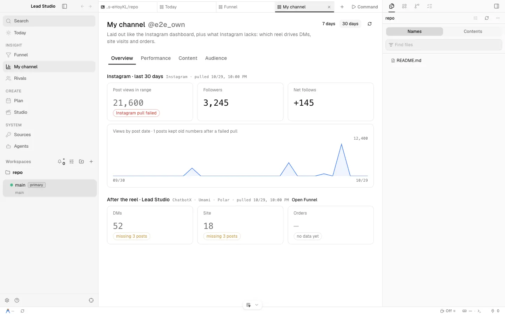
lead/boards/own.png
My channel
Thấy gì4 tab, 3 số (21,600 lượt xem kèm "Instagram pull failed", 3,245 follower, +145), biểu đồ lượt xem, khối "After the reel".
Trùng"After the reel" (52 · 18) là hàng OWN01 của Funnel. Đỉnh biểu đồ 12,400 bằng Reel views trên Today.
KeepChỉ bảng này cho thấy kênh của anh. Pill đỏ "Instagram pull failed" nói thẳng.
Cut3 tab Performance, Content, Audience chưa chụp nên chưa rõ có gì. Lỗi "1 posts kept old numbers". Lúc trống không có tiêu đề, không có nút.
MergeVào Funnel, hoặc giữ My channel và đưa Funnel vào trong (layout reader gợi ý cách sau).
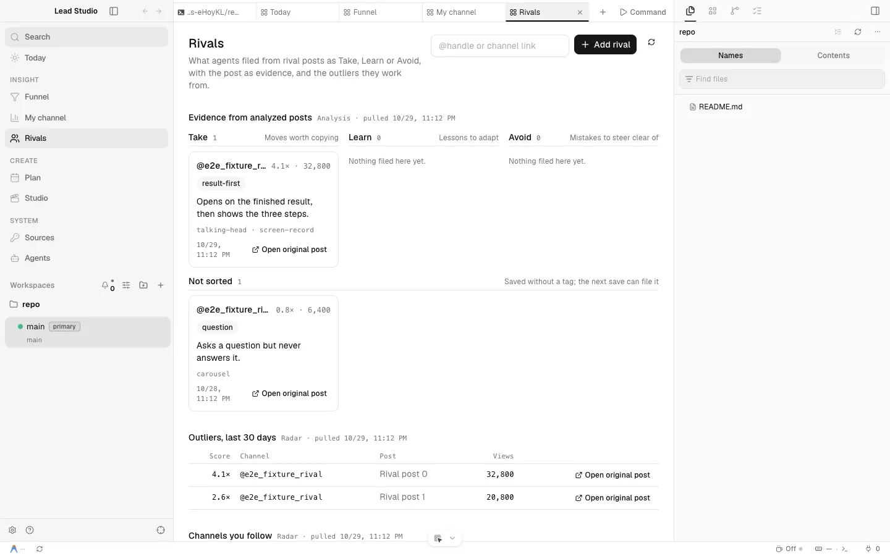
lead/boards/rivals.png
Rivals
Thấy gìCột Take, Learn, Avoid. Not sorted. Outliers 30 ngày. Channels you follow. Ô Add rival.
TrùngHàng Outlier 4.1× · 32,800 chính là thẻ Take. Nút "Pull rivals" cho bảng này lại nằm ở Sources.
KeepBa câu giải nghĩa cột rất gọn: "Moves worth copying", "Lessons to adapt", "Mistakes to steer clear of". Trang trống tốt nhất app.
CutBảng Outliers lặp thẻ Take. Phụ đề dài và nói chuyện nội bộ ("filed", "work from"). Nhãn mono "Analysis", "Radar".
MergeGộp ngay trong bảng: Outliers vào thẻ Take. Nút "Pull rivals" có thể dời từ Sources về đây (layout reader, suy luận).
lead/boards/plan.png
Plan
Thấy gìLịch tháng có chip. Tuần có thẻ. Ngày có 7 trường, chip Missing và nút Cook.
TrùngCook bắt đầu ở đây, nên bảng Studio trống. Thẻ ngày hiện tiến độ cook: "Cooking", "Starting Claude in this workspace", "Open workspace".
KeepViệc chính của app. Thẻ Plan giữ đúng lời hứa trong Cook pane: "the Plan card shows the progress".
Cut7 chip Missing lặp 7 hàng "not yet". Chip tháng bị cắt còn vài chữ ("Cursor...", "PLAN..."). Plan trống không có một câu.
MergePlan không có chỗ để gộp vào. Studio có thể gộp vào Plan.
lead/boards/studio.png
Studio
Thấy gìChữ "Studio" và một câu: "Nothing is cooking. Cook a reel from Plan."
TrùngCook mở từ Plan, thành tab "Cook" trong workspace "Studio Reel". Ba tên cho một chỗ: Studio, Cook, Studio Reel.
KeepCâu trống hay nhất app. Bảng có thể thành danh sách mọi lần cook kèm trạng thái (layout reader).
CutTrống trong mọi lần chụp. Việc thật diễn ra ở Cook pane.
MergeVào Plan, hoặc vào Cook pane.
lead/boards/gate.png
Gate 1
Thấy gì4 hàng thay đổi có công tắc, diff v1 và v2, nút "Approve plan v2 (4 changes)".
TrùngSố đếm có trên Today. Diff lặp lại 4 hàng phía trên.
KeepPhụ đề dạy đúng một kỹ năng: "Switch off any change you do not want. The diff and the count follow the switches." Nút nói rõ việc sẽ xảy ra, có đếm.
CutDiff là khung code editor (số dòng, con trỏ, thanh minimap). Tên là chữ mã "Gate 1". Không có trong sidebar.
MergeCùng Gate 2 thành một bảng duyệt, hoặc vào khối duyệt của Today.
lead/boards/gate2.png
Gate 2
Thấy gìTrống: "Nothing waits to send. Publish a reel from its card in Plan to send it here."
TrùngSố đếm có trên Today ("Gate 2 · drafts to send 0"). Không có trong sidebar. PublishSheet chưa chụp được.
KeepCâu trống chỉ đúng chỗ cần đi tiếp.
CutTrang không có tiêu đề khi trống. Mới chỉ thấy lúc trống.
MergeCùng Gate 1 thành một bảng duyệt, hoặc vào Today.
lead/boards/agents.png
Agents
Thấy gìJournal (trống, "No agent has called yet.") và bảng MCP tokens (local, Revoke, Create).
TrùngSettings cũng có mục "Agents". Today có "Running workspaces".
KeepCâu tạo lòng tin: "Lead Studio never calls a model itself."
CutChữ của dev: MCP, tokens, Journal. Đây là việc cài đặt, không phải việc hằng ngày.
MergeVào Settings.
lead/boards/cook-pane.png
Cook pane
Thấy gìĐầu trang, card trạng thái có YOU CAN và IF YOU WAIT, dải 6 bước, ô Video, Script. Bên cạnh là terminal và cây file.
TrùngThẻ Plan hiện cùng tiến độ. Terminal in chữ thô ngay cạnh card.
KeepChữ và chuyển động tốt nhất app: tên người làm, số bước, giờ so với thường lệ, lời hứa "kept" khi lỗi.
CutTerminal và cây file ở chế độ mặc định (nút "Show terminal" đã có sẵn). Đường dẫn file, "pid", "frame 0". Ô Video ghi "No video yet" khi Draft đã xong.
MergeStudio có thể gộp vào đây và thành danh sách các Cook pane.
lead/boards/sources.png
Sources
Thấy gìSettings, trang Sources: mỗi dịch vụ một thẻ có pill, câu trạng thái và 3 tới 4 nút.
Trùng"Last pulls" trên Today lặp mọi trạng thái. Tới được từ sidebar, từ Today và từ các lỗi. Nút "Pull rivals" của bảng Rivals nằm ở đây.
KeepCâu nhóm bình tĩnh và rõ: "Your own channel and the rivals you track, pulled on request, never on a timer." Sự thật thà lúc chờ lâu và lúc lỗi sống ở trang này.
CutBỏ khỏi sidebar, chỉ giữ trong Settings. Chung quanh nó là các nhóm Settings của Orca.
MergeVào Settings, với trạng thái thành bảng dấu tick như Connectors của Claude.
3 ý tưởng nên lấy trước
Ba đề xuất đổi cảm giác nhiều nhất với ít việc nhất, rút từ cả bốn reader. Đây là đề xuất để anh chọn. Cỡ việc là em đoán.
Một màn, một việc
Canvas của Claude luôn chỉ giữ một thứ chính: lời chào với ô soạn, hoặc một cột trả lời. Ở Lead, mọi bảng phải chia chỗ với phần của Orca: cột file "README.md" bên phải, dải 9 tab cụt tên, menu "+" toàn công cụ dev, chữ "ORCA" lúc mở và chữ "Loading editor...". Giấu phần đó khi đang xem bảng là bước lớn nhất để Lead thôi trông như một bản Orca.
claude/01-first-open.pngclaude/03-main-job.png
Đổi gì ở Lead Studio
Màn mở đầu (lead/01-first-open.png) chỉ còn một nút mở Today. Ẩn cột file trên mọi bảng (lead/boards/today.png). Menu "+" chỉ còn bảng của Lead (lead/07-navigation-b.png). Bỏ chữ "Loading editor..." (frames/lead-01-first-open-nav/f06.png).
Chữ của anh
Clean, Great, Quick
Cỡ việc (đoán)
Vừa
Đáp ngay, rồi lấp vào chỗ đã giữ
Claude đáp mỗi thao tác ngay chỗ mắt nhìn. Bong bóng và ô soạn trống hiện ngay khi Enter. Hàng xám giữ hình trang trong khoảng 0,4 s. Chữ mới hiện mờ rồi đậm. Settings mở trong dưới 0,1 s. Lead có những lúc chờ tương tự nhưng để lộ ra: hai khung trắng rồi spinner khi mở Settings (khoảng 1,2 s, đo yếu), thanh "0 / 13" đứng yên ít nhất 21 s, chữ trong card Cook đổi phắt. Phần lớn việc này nằm ở giao diện. Backend giữ nguyên tốc độ.
Mở Settings (frames/lead-06-settings-open/f02 tới f04). Lần đầu mở Today ("Loading editor...", 913 ms). Thanh kéo ở Sources (frames/lead-04-sidecar-pull/f03 tới f06). Dòng mới trong card Cook (lead/boards/cook-pane.png). Plan đổi Week sang Day.
Chữ của anh
Smooth, Quick, Fast
Cỡ việc (đoán)
Nhỏ tới vừa
Nói bằng lời của người làm reel
Claude gọi mọi thứ bằng tên người dùng nhận ra ("Claude's response was interrupted.", "For complex work and everyday tasks") và rào chữ kỹ thuật vào mục Developer. Những câu hay nhất của Lead đã làm vậy: "Nothing is cooking. Cook a reel from Plan.", YOU CAN và IF YOU WAIT, "pulled on request, never on a timer." Phần còn lại lộ tên mã: "crowsnest_save_funnel", "Gate 1", "sidecar", "session id", "pid 4000007", "frame 0", "vo/script.json", cùng lỗi số nhiều "missing 1 keywords", "1 posts". Một lượt sửa chữ: lời thường, mỗi lỗi một câu với một hai động từ, một lời chào riêng của Lead trên Today, và thêm hàng YOU CAN cho Sources và Gate.
claude/05-error.pngclaude/08-model-menu.png
Đổi gì ở Lead Studio
Màn trống Funnel, Rivals, My channel (lead/02-empty-state-funnel.png). Thẻ Sources (lead/06-settings.png). Lỗi Cook (lead/cook/cook-pane-pid-gone.png). Tên Gate 1, Gate 2. Nhãn "Key", "Gift", "Offer" ở Plan Day (lead/03-main-job-c.png).
Chữ của anh
Great, Creative, Clean
Cỡ việc (đoán)
Nhỏ
Chỗ Lead Studio đang hơn Claude
Những điểm này Claude không có. Nên giữ khi đổi giao diện.
lead/04-long-running-b.png
Nói thật khi chờ lâu
"Taking longer than usual (2:00)... You can leave Settings; the pull keeps going." Claude không có đồng hồ, không nói lý do.
lead/05-error-b.png
Lỗi giữ lại việc đã làm
"3 rivals have new numbers. The other 10 keep their older numbers." Ở Cook: "6 of 10 steps are done and kept".
lead/05-error-c.png
Một nút làm hai việc
"Turn on and pull the rest (11)". Sau khi Stop thì có "Pull the rest (10)" (lead/04-long-running-c-stopped.png).
lead/boards/cook-pane.png
Giọng của Cook pane
"Claude is building the chapters", cùng hai hàng YOU CAN "Nothing to do. You can leave; the Plan card shows the progress." và IF YOU WAIT. Mỗi bước có tiêu đề riêng.
frames/lead-04-cook-pane-states/f06.png
Lời hứa được giữ
Rời Cook pane thì thẻ Plan vẫn hiện tiến độ: "Cooking", "Starting Claude in this workspace", "Open workspace".
lead/boards/agents.png
Lời hứa tạo lòng tin
"Lead Studio never calls a model itself." và "pulled on request, never on a timer." Nhóm sidebar INSIGHT, CREATE, SYSTEM cũng ngắn và đúng giọng Lead.
Lỗ hổng bằng chứng
Codex chưa cài, nên không có trong bài.
PublishSheet chưa chụp. Nút Publish chỉ hiện khi reel đã có video gắn qua MCP.
Claude chặn CDP, nên không có số đo từ DOM. Thời gian của Claude lấy từ quay màn hình (khoảng 16,6 khung/s) và phát hiện cảnh. Không có đường cong easing.
Video của Lead ghép từ khung CDP, nên mọi số thời gian của Lead là số yếu. Lead chạy bản dev, ẩn cửa sổ; 11 s khởi động không so được với khoảng 1 s của Claude.
Lead chạy trên DB mẫu với sidecar giả và Claude giả. Tốc độ kéo và ô Video có thể khác khi chạy dữ liệu thật.
Lỗi mạng thật của Claude không chụp được. Khung "interrupted" sau Stop đứng thay.
Cỡ cửa sổ khác nhau (Claude 1710×1074, Lead 1440×900). Các con số đếm là đếm bằng mắt, có thể lệch khoảng 2.
Sidebar của Claude là lịch sử thật của anh (khoảng 20 dòng), nặng hơn máy của người mới.
3 tab còn lại của My channel chưa chụp. Studio, Gate 2 và Agents mới chỉ thấy lúc trống.
Screencast của Lead không vẽ con trỏ, nên không thấy được hover và nhãn khi rê chuột của Lead.
5 trên 8 video Claude có bản nháp của anh trong khung hình: claude-07-navigation, claude-08-search-newchat-switch, claude-08-settings-open-close, claude-08-sidebar-toggle-hover, claude-08-type-send-stream. Em không nhúng chúng, và dùng khung hình sạch thay vào.
Lời chào "Moonlit chat?" có đổi theo giờ hay không thì chưa chứng minh. Mới thấy nó một lần.
Em đã sửa gì so với các reader
Bỏ: "Settings của Lead chớp từ tối sang sáng" (motion). Hai khung đó cách nhau khoảng 9 s và ở hai bước khác nhau của journey.
Bỏ: "menu '+' mờ nửa ở new-tab f02" (motion). Khung f02 rõ hẳn. Menu mờ có thật, nhưng ở cook-pane-open f02.
Sửa: "các khung Day tối trong clip new-tab" (motion). Các khung đó là bảng Studio sáng. Khung Day tối nằm ở cook-pane-states f06 tới f08.
Sửa: "skeleton Scheduled khoảng 0,5 s ở 5,5 tới 6,0 s" (motion). Đoạn đó là thẻ Artifacts lấp vào. Skeleton Scheduled kéo dài từ 7,72 s tới 8,10 s.
Sửa: "spinner Settings ở f03" (motion). f02 và f03 trắng trơn, spinner ở f04, nội dung từ f05.
Thu hẹp: "Stop hiện ngay khi gửi" (motion). Lúc chờ ở f02 ô soạn còn mũi tên. Stop hiện khi chữ bắt đầu chạy, ở f03.
Sửa: số khung trong cook-pane-states (motion) bị lệch. Trang dẫn ảnh tĩnh thay vào.
Sửa: "Cook không bao giờ dùng phần trăm" (layout). Bước Draft ghi "60%".
Sửa: số "no data yet" (layout x5, copy x6, states "13+"). Đếm lại được 7 nhãn và 8 ô dấu gạch.
Sửa: "After the reel lặp Funnel" (layout). Nó khớp hàng OWN01 trong By keyword (52 · 18). Tổng của Funnel là 82 DM.
Sửa: "Plan trống chỉ có dấu + ở hôm nay" (states). Dấu + có ở mọi ngày từ hôm nay trở đi.
Thêm (em thấy trên ảnh): "Checkout clicks", "Purchases" hiện hai lần trên Today; "1 posts"; "COOKP / ANE" ngắt giữa chữ; ô Video sai cả ở bước 5; "6 of 10" và "5 of 6"; chip tháng bị cắt; diff của Gate 1 là code editor; Claude cũng xê dịch một chút ở Artifacts; thẻ Plan hiện tiến độ cook.